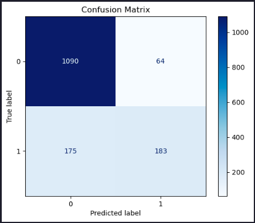
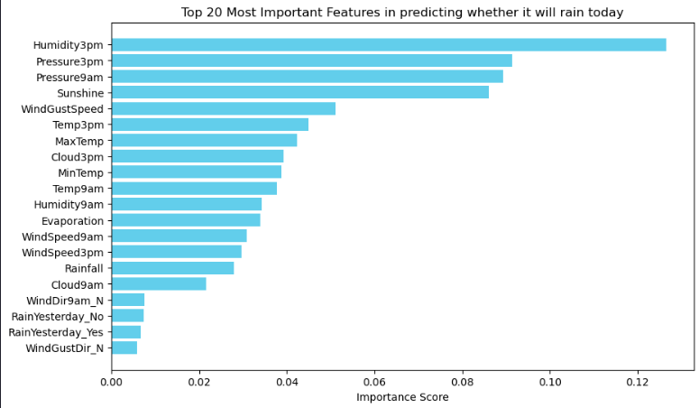
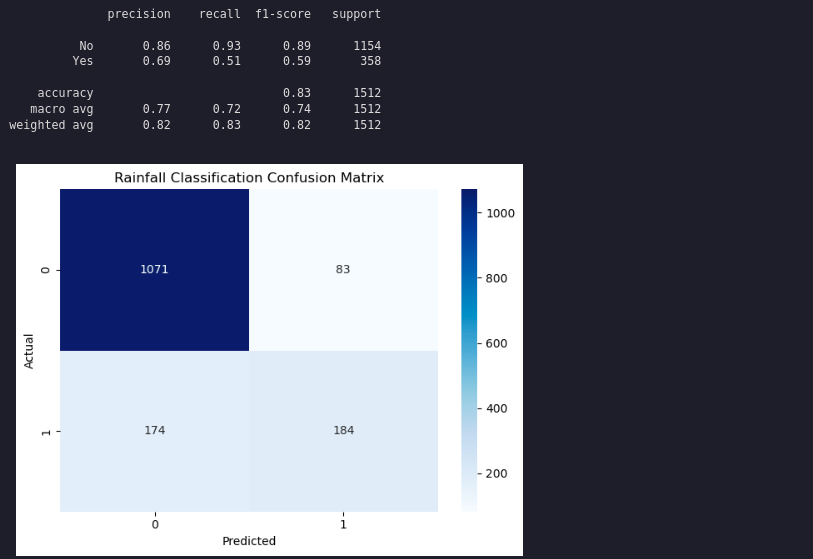

Rainfall Prediction Classifier
Estimated reading time: ~15 minutes
Final Project: Building a Rainfall Prediction Classifier
Objectives
- Explore and perform feature engineering on a real-world data set
- Build a classifier pipeline and optimize it using grid search cross validation
- Evaluate your model by interpreting various performance metrics and visualizations
- Implement a different classifier by updating your pipeline
About The Dataset
The dataset contains observations of weather metrics for each day from 2008 to 2017 in Australia. Features include temperature, rainfall, wind, humidity, pressure, cloud cover, and rain indicators.
The dataset you’ll use in this project was downloaded from Kaggle at https://www.kaggle.com/datasets/jsphyg/weather-dataset-rattle-package/ Column definitions were gathered from http://www.bom.gov.au/climate/dwo/IDCJDW0000.shtml
The dataset contains observations of weather metrics for each day from 2008 to 2017, and includes the following fields:
| Field | Description | Unit | Type |
|---|---|---|---|
| Date | Date of the Observation in YYYY-MM-DD | Date | object |
| Location | Location of the Observation | Location | object |
| MinTemp | Minimum temperature | Celsius | float |
| MaxTemp | Maximum temperature | Celsius | float |
| Rainfall | Amount of rainfall | Millimeters | float |
| Evaporation | Amount of evaporation | Millimeters | float |
| Sunshine | Amount of bright sunshine | hours | float |
| WindGustDir | Direction of the strongest gust | Compass Points | object |
| WindGustSpeed | Speed of the strongest gust | Kilometers/Hour | object |
| WindDir9am | Wind direction averaged over 10 minutes prior to 9am | Compass Points | object |
| WindDir3pm | Wind direction averaged over 10 minutes prior to 3pm | Compass Points | object |
| WindSpeed9am | Wind speed averaged over 10 minutes prior to 9am | Kilometers/Hour | float |
| WindSpeed3pm | Wind speed averaged over 10 minutes prior to 3pm | Kilometers/Hour | float |
| Humidity9am | Humidity at 9am | Percent | float |
| Humidity3pm | Humidity at 3pm | Percent | float |
| Pressure9am | Atmospheric pressure reduced to mean sea level at 9am | Hectopascal | float |
| Pressure3pm | Atmospheric pressure reduced to mean sea level at 3pm | Hectopascal | float |
| Cloud9am | Fraction of the sky obscured by cloud at 9am | Eights | float |
| Cloud3pm | Fraction of the sky obscured by cloud at 3pm | Eights | float |
| Temp9am | Temperature at 9am | Celsius | float |
| Temp3pm | Temperature at 3pm | Celsius | float |
| RainToday | If there was at least 1mm of rain today | Yes/No | object |
| RainTomorrow | If there is at least 1mm of rain tomorrow | Yes/No | object |
Install and import the required libraries
import pandas as pd
import matplotlib.pyplot as plt
from sklearn.compose import ColumnTransformer
from sklearn.pipeline import Pipeline
from sklearn.preprocessing import StandardScaler, OneHotEncoder
from sklearn.model_selection import train_test_split, GridSearchCV, StratifiedKFold
from sklearn.ensemble import RandomForestClassifier
from sklearn.linear_model import LogisticRegression
from sklearn.metrics import classification_report, confusion_matrix, ConfusionMatrixDisplay, roc_curve
import seaborn as snsLoad the data
url="https://cf-courses-data.s3.us.cloud-object-storage.appdomain.cloud/_0eYOqji3unP1tDNKWZMjg/weatherAUS-2.csv"
df = pd.read_csv(url)
df = df.dropna()Data Preparation
df = df.rename(columns={'RainToday': 'RainYesterday','RainTomorrow': 'RainToday'})
df = df[df.Location.isin(['Melbourne','MelbourneAirport','Watsonia',])]
def date_to_season(date):
month = date.month
if (month == 12) or (month == 1) or (month == 2):
return 'Summer'
elif (month == 3) or (month == 4) or (month == 5):
return 'Autumn'
elif (month == 6) or (month == 7) or (month == 8):
return 'Winter'
elif (month == 9) or (month == 10) or (month == 11):
return 'Spring'
df['Date'] = pd.to_datetime(df['Date'])
df['Season'] = df['Date'].apply(date_to_season)
df = df.drop(columns=['Date'])Feature and Target Definition
X = df.drop(columns=['RainToday'], axis=1)
y = df['RainToday']Train/Test Split
from sklearn.model_selection import train_test_split
X_train, X_test, y_train, y_test = train_test_split(X, y, test_size=0.2, stratify=y, random_state=42)Preprocessing and Pipeline
numeric_features = X_train.select_dtypes(include=['number']).columns.tolist()
categorical_features = X_train.select_dtypes(include=['object', 'category']).columns.tolist()
numeric_transformer = Pipeline(steps=[('scaler', StandardScaler())])
categorical_transformer = Pipeline(steps=[('onehot', OneHotEncoder(handle_unknown='ignore'))])
preprocessor = ColumnTransformer(
transformers=[
('num', numeric_transformer, numeric_features),
('cat', categorical_transformer, categorical_features),
]
)
pipeline = Pipeline(steps=[
('preprocessor', preprocessor),
('classifier', RandomForestClassifier(random_state=42))
])Grid Search and Model Evaluation
param_grid = {
'classifier__n_estimators': [50, 100],
'classifier__max_depth': [None, 10, 20],
'classifier__min_samples_split': [2, 5]
}
cv = StratifiedKFold(n_splits=5, shuffle=True)
grid_search = GridSearchCV(pipeline, param_grid, cv=cv, scoring='accuracy', verbose=2)
grid_search.fit(X_train, y_train)
test_score = grid_search.score(X_test, y_test)
print("Test set score: {:.2f}".format(test_score))
y_pred = grid_search.predict(X_test)
print("\nClassification Report:")
print(classification_report(y_test, y_pred))
conf_matrix = confusion_matrix(y_test, y_pred)
disp = ConfusionMatrixDisplay(confusion_matrix=conf_matrix)
disp.plot(cmap='Blues')
plt.title('Confusion Matrix')
plt.show()Test set score: 0.84
Classification Report:
precision recall f1-score support
No 0.86 0.94 0.90 1154
Yes 0.74 0.51 0.60 358
accuracy 0.84 1512
macro avg 0.80 0.73 0.75 1512
weighted avg 0.83 0.84 0.83 1512
Feature Importances
Now let’s extract the feature importances and plot them as a bar graph.
# Combine numeric and categorical feature names
feature_names = numeric_features + list(grid_search.best_estimator_['preprocessor']
.named_transformers_['cat']
.named_steps['onehot']
.get_feature_names_out(categorical_features))
feature_importances = grid_search.best_estimator_['classifier'].feature_importances_
importance_df = pd.DataFrame({'Feature': feature_names,
'Importance': feature_importances
}).sort_values(by='Importance', ascending=False)
N = 20 # Change this number to display more or fewer features
top_features = importance_df.head(N)
# Plotting
plt.figure(figsize=(10, 6))
plt.barh(top_features['Feature'], top_features['Importance'], color='skyblue')
plt.gca().invert_yaxis() # Invert y-axis to show the most important feature on top
plt.title(f'Top {N} Most Important Features in predicting whether it will rain today')
plt.xlabel('Importance Score')
plt.show()
Let’s try another model: Logistic Regression
pipeline.set_params(classifier=LogisticRegression(random_state=42, max_iter=1000))
grid_search.estimator = pipeline
param_grid = {
'classifier__solver': ['liblinear'],
'classifier__penalty': ['l1', 'l2'],
'classifier__class_weight': [None, 'balanced']
}
grid_search.param_grid = param_grid
grid_search.fit(X_train, y_train)
y_pred = grid_search.predict(X_test)
print(classification_report(y_test, y_pred))
# Generate the confusion matrix
conf_matrix = confusion_matrix(y_test, y_pred)
plt.figure()
sns.heatmap(conf_matrix, annot=True, cmap='Blues', fmt='d')
# Set the title and labels
plt.title('Rainfall Classification Confusion Matrix')
plt.xlabel('Predicted')
plt.ylabel('Actual')
# Show the plot
plt.tight_layout()
plt.show()
Summary
This article demonstrated how to build a rainfall prediction classifier using pipelines, grid search, and feature engineering, and how to compare different models.